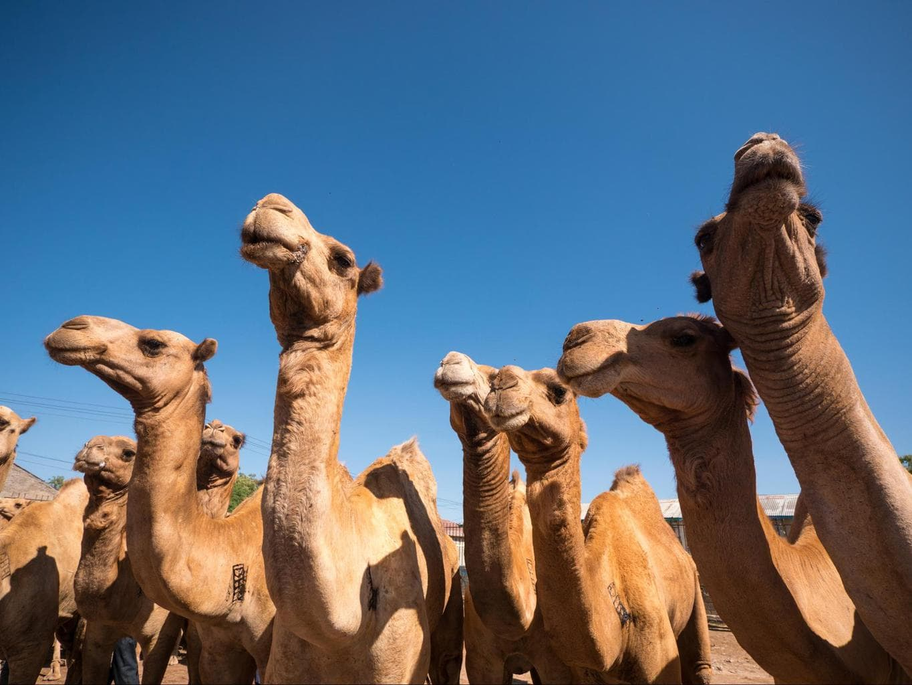
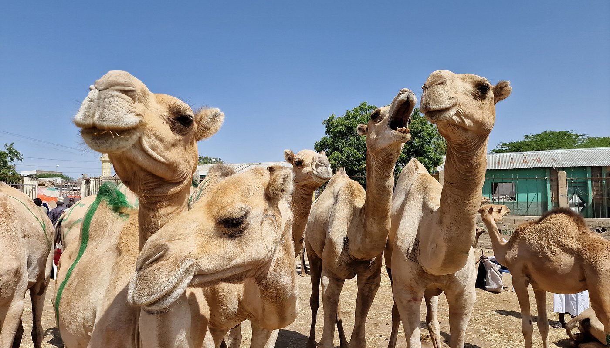
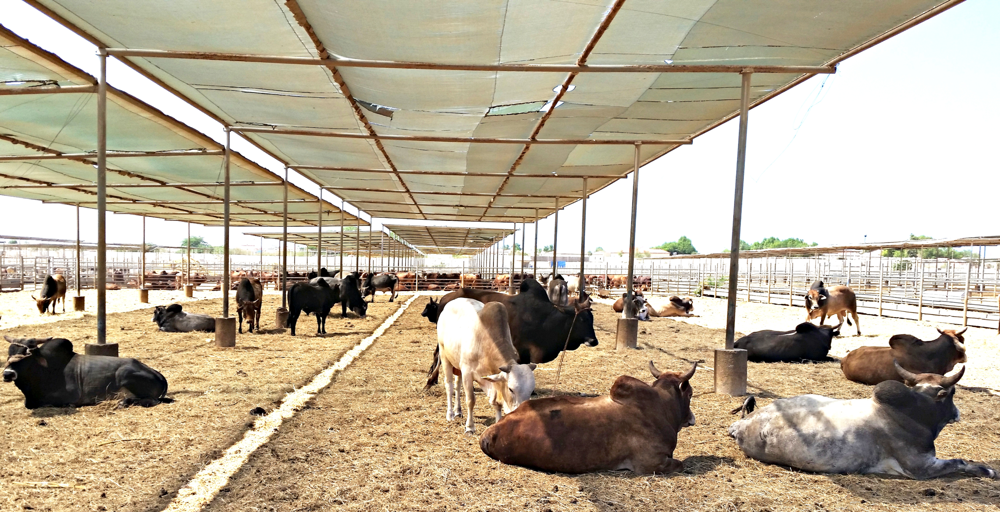
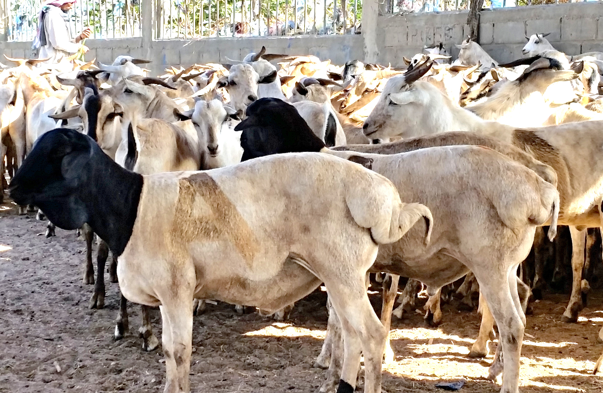
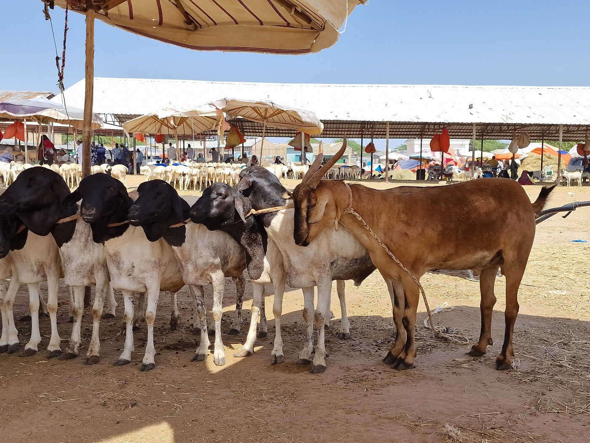

SUUQ GAYNTA XOOLAHA
WAX QABADKA 2024
HALKAN KA EEG MASHRUUCA GEELA
Kuwaani Waa Awrti la gaday

Kuwani waa Qurbac Yadi

HALKAN KA EEG MASHRUUCA LO'DA
Kuwaani Waa Dibi la gaday

HALKAN KA EEG MASHRUUCA ARIGA
Kuwaani Waa Ari la gaday
 
About Us
Contact Us